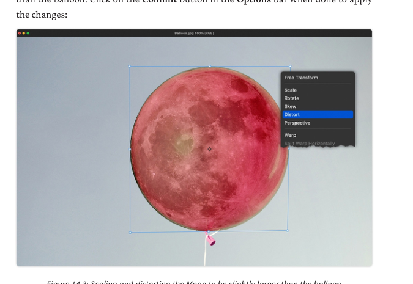
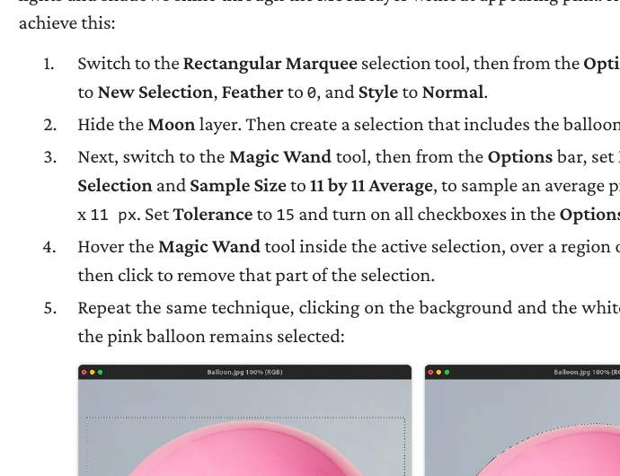
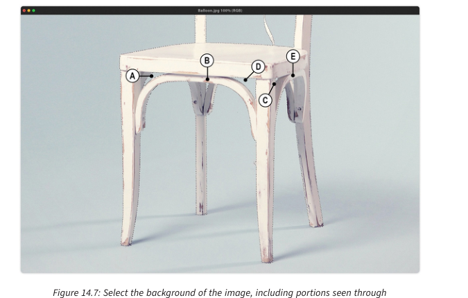
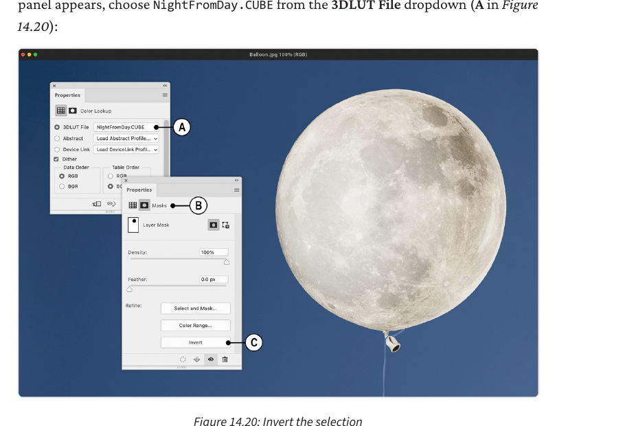
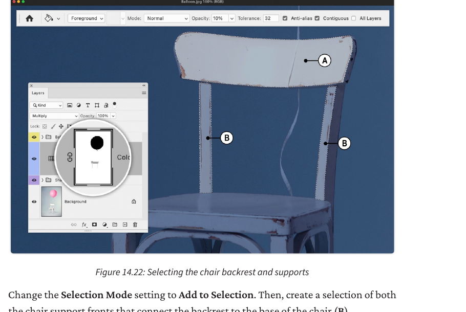
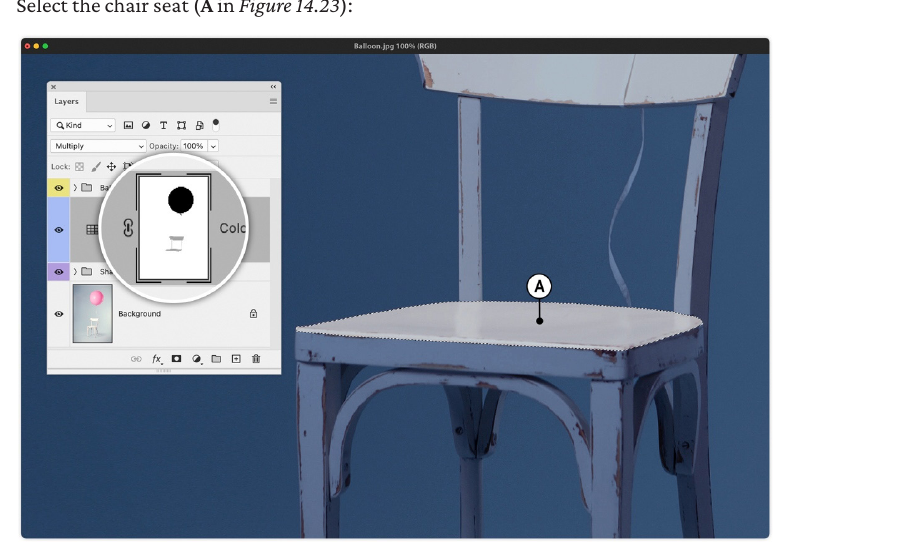
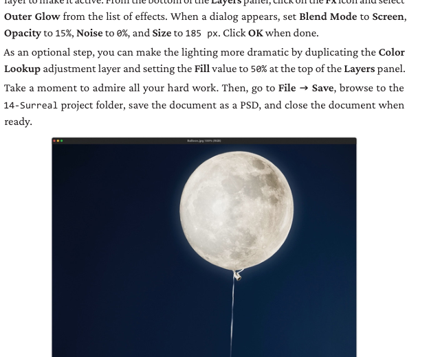
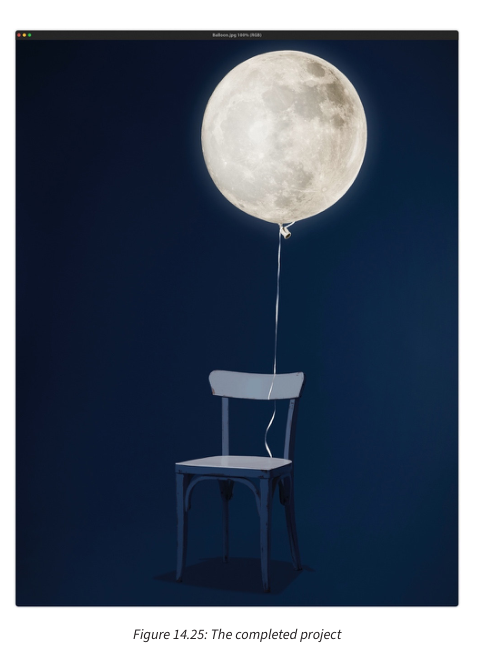

Surreal_Composite_Project/01_assets/02_working/03_exports/04_evidence. Use the original classroom files included with this course: chair-and-balloon source and Moon source. No publisher login is required.Part 1 — Prepare
Check source compatibility
Do this: Place candidate source images roughly together before making detailed masks.
Look for: matching camera angle, light direction, resolution, scale, colour temperature.

Open the Moon image and create a base selection
Where: Elliptical Marquee Tool → draw around the Moon → Select > Transform Selection.
Hotkey: M cycles marquee tools. Ctrl/Cmd + D deselects.

Refine the edge
Where: Options bar → Select and Mask.
Use small refinements. In the source example the edge is smoothed and shifted inward to remove unwanted fringe.
Part 2 — Build
Transfer the Moon into the master image
Where: Layer → Duplicate Layer → Destination: master/background file.
Hotkey option: Ctrl/Cmd + J copies the selected pixels to a new layer first.

Scale and distort to fit the balloon
Where: Edit → Free Transform, then right-click → Distort or Warp.
Hotkey: Ctrl/Cmd + T Free Transform.

Remove pink colour contamination
Where: Select the balloon area → Black & White adjustment or masked correction.
The source workflow converts the balloon area so its highlights and shadows can show through without staying pink.

Isolate the chair for shadow and light control
Where: Select Subject or manual selection tools → Select and Mask → Layer Via Copy.
Hotkey: Ctrl/Cmd + J after a selection creates a copied layer.

Part 3 — Light + Finish
Create the night grade
Where: Adjustments → Color Lookup → choose a day-for-night style LUT such as NightFromDay when available.
Invert/mask the grade where it should not affect the Moon.

Add moonlight to the chair back and supports
Where: Select the chair back/supports → paint on the relevant mask/adjustment.
In the source workflow, the selected chair back and support fronts are treated so they appear less blue/brighter where moonlight hits them.

Add moonlight to the seat
Where: Polygonal Lasso Tool → select chair seat → apply local light/colour correction.
Hotkey: L cycles Lasso tools. G activates the Paint Bucket/Gradient group in default Photoshop shortcuts.

Restore blue/cool light in thin ribbon areas
Where: select ribbon → mask/paint local blue tone along twist areas.

Add glow and final audit
Where: Moon layer → Fx → Outer Glow, or a new soft-light/glow layer.
Audit geometry, light, shadow, tone, colour, edges, texture and interaction.

Simulation
Open Composite Believability Simulator. Change shadow direction, softness, exposure and colour. Then explain which visual cue most quickly made the image feel fake.